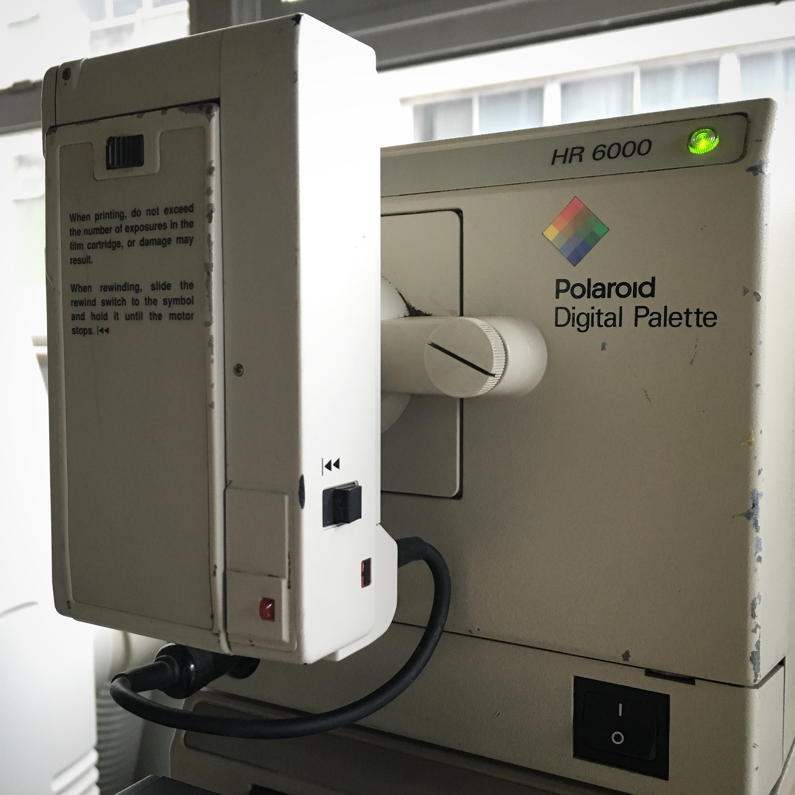

Polaroid Digital Palette
The desktop computer colour output device whose ritual is washing light through three filters onto instant film

Overview
The Polaroid Digital Palette (also sold as the CI-3000 / CI-5000 family and, for Macs, the Digital Palette HR) was a photographic film recorder that let desktop computers of the mid-1980s produce true color slides and prints on Polaroid instant film. Launched in 1986, it sat between the computer and a sheet of instant film, converting the graphics signal into a photographic exposure.
Its interaction model is the mechanical color-separation ritual. There is no color display tube and no three-gun phosphor. The Palette exposes a single frame of film three times, running the light through a rotating red, green, and blue filter wheel in turn, reinforcing each color record onto the film. The user loads an instant film pack, waits while the mechanism whirs and exposes, then pulls the film apart to reveal the finished image. Color exists in the Palette not as pixels on a screen but as accumulated light washing over a photosensitive chemical surface.
This makes the Palette the museum's clearest example of computer output in the other direction: not drawing on a screen or a page, but developing light onto instant film through a mechanical filter wheel. It pairs naturally with pen plotters and the Commodore 1520 plotter — machines where the spectacle of physically rendering an image is the point — yet it is distinct in that the medium is photographic and the color is made by subtraction through three passes of colored light.
Deep dive
Most color output devices mix color from display phosphors or ink dots. The Palette does neither: it exposes one instant-frame three times, through red, green, and blue filters, so the final color is built up as superimposed light records on the film. The user participates in a slow, mechanical ceremony — load film, wait for the whir and the three-fold exposure, then peel the print apart. The interface is the mechanism.
Before affordable digital projectors, the Palette turned a computer's graphics into real slides and prints for presentations and design work. It is the physical, chemical foot of the museum's display lineage — the ancestor within the era of making software artefacts tangible as photographs.